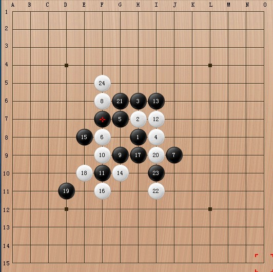
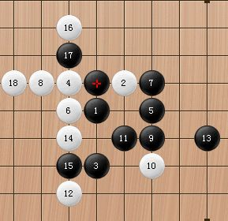

精彩棋局评议
#1 精彩棋局评议 作者：逍遥一梦 发表时间：2009-3-15 17:09:57
千里追风邀请玫瑰在无禁一区99房间下棋，我在旁边观看。有盘棋局如下图所示，玫瑰想抓千里追风禁，千里追风说 F7 不是禁点， 玫瑰不信！因是在无禁区下的电脑不会自动判断是否禁手，于是二人到有禁8复盘，千里追风在F7点放下了第25子，结果，画面没有出现“三三禁手黑负”的字样， 玫瑰目瞪口呆！
经查相关理论，是这样解释的：F7是个假33点，由于G8点将成四四禁手而不能走，这种三属于死三，所以F7点不算三三!
欢迎高手们对此作出更规范的解释!

假三三例二:

［本站用户 刀魂 于 2009-3-16 13:07:42 花5个金币送您鲜花一朵］
［本站用户 斯文扫地 于 2009-3-16 13:54:36 花5个金币送您鲜花一朵］
#2 Re:精彩棋局评议 作者：刀魂 发表时间：2009-3-15 17:47:50
我来做个解释 F7 为何叫假禁吧：F7确实形成了3个活三，但是假如你H5或者D9的时候，对手另外一个三，并不能形成活四，原因是形成
四四啦，专业术语就是解禁，本例就是利用G8的四四解三三的禁，同样的，也可以利用长联解三三的禁。希望大家以后能了解。
#3 Re:精彩棋局评议 作者：刀魂 发表时间：2009-3-15 18:14:58
打错了 ，上面的3个活三 改为2个活三，不好意思，手误。。。#4 Re:精彩棋局评议 作者：我爱你遥遥 发表时间：2009-3-16 0:00:38
有点明白了 谢谢解释
#5 Re:精彩棋局评议 作者：苍苍 发表时间：2009-3-16 9:34:14
恩 在书上看到过 那个点 不可以走的 44#6 Re:精彩棋局评议 作者：斯文扫地 发表时间：2009-3-16 13:53:44
不是太懂这个 得好好学习学习
得好好学习学习
#7 Re:精彩棋局评议 作者：月寻 发表时间：2009-3-17 9:18:02
一年多的疑惑顿开，
我说在有禁有时33咋不被系统判呢～
原来是这么回事。

#8 Re:精彩棋局评议 作者：刀魂 发表时间：2009-3-17 13:19:22
7 楼的 还不感激我一下（咋不送偶鲜花捏？？？嘎嘎，开玩笑的哦），以后要是我懂的，可以问我哦（要是我知道的话 ）
）
#9 Re:Re:精彩棋局评议 作者：逍遥一梦 发表时间：2011-8-26 12:30:46
破小子，现在在忙什么啦？换了哪个QQ了？